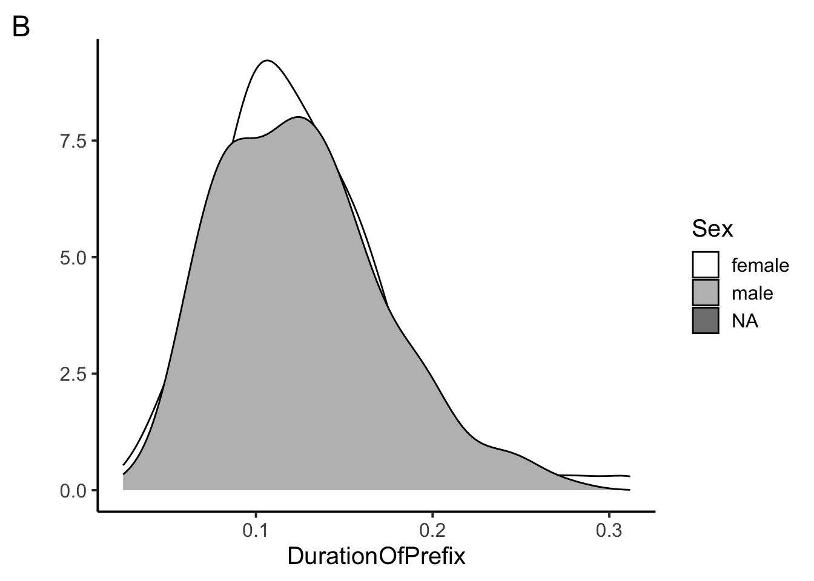
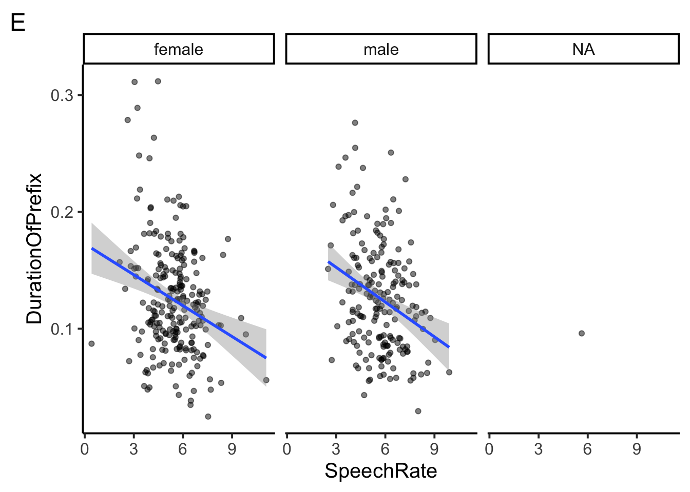
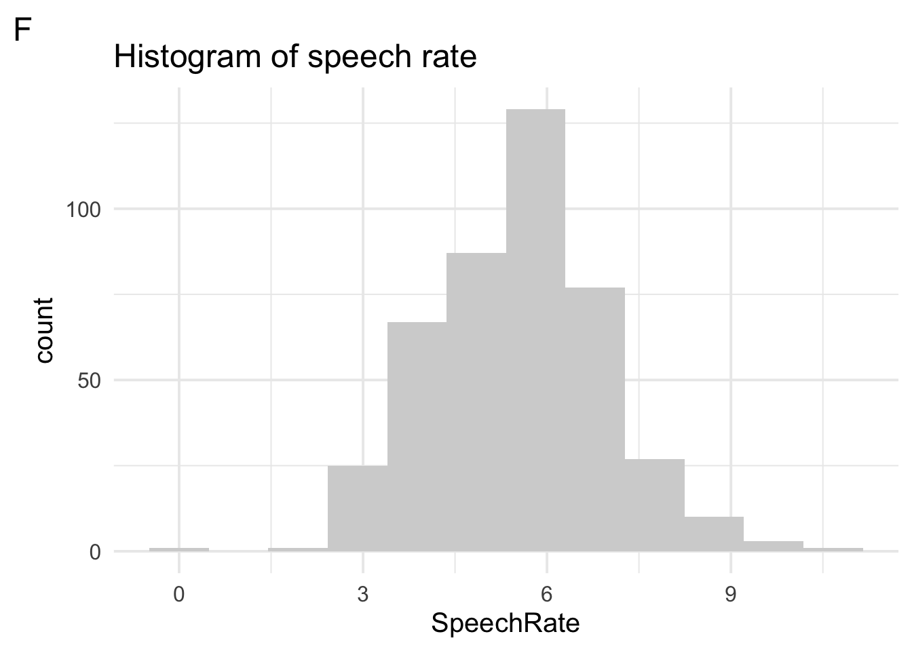
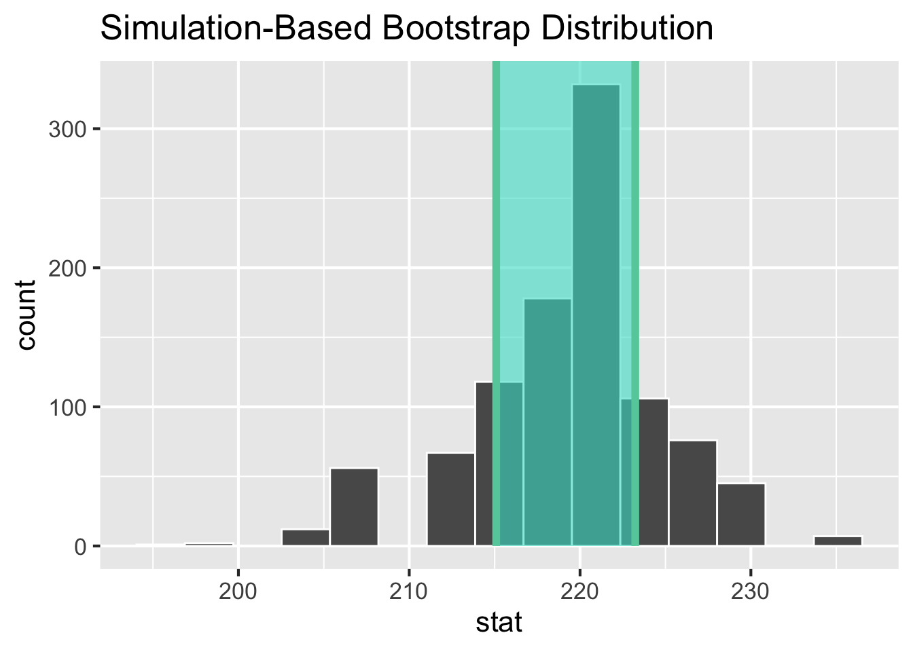
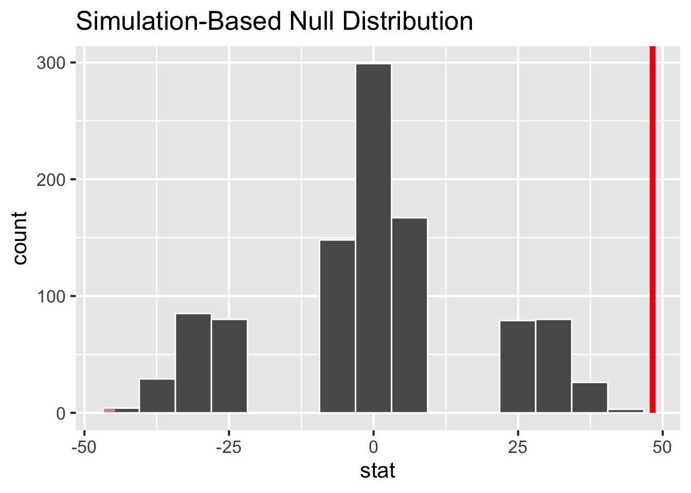
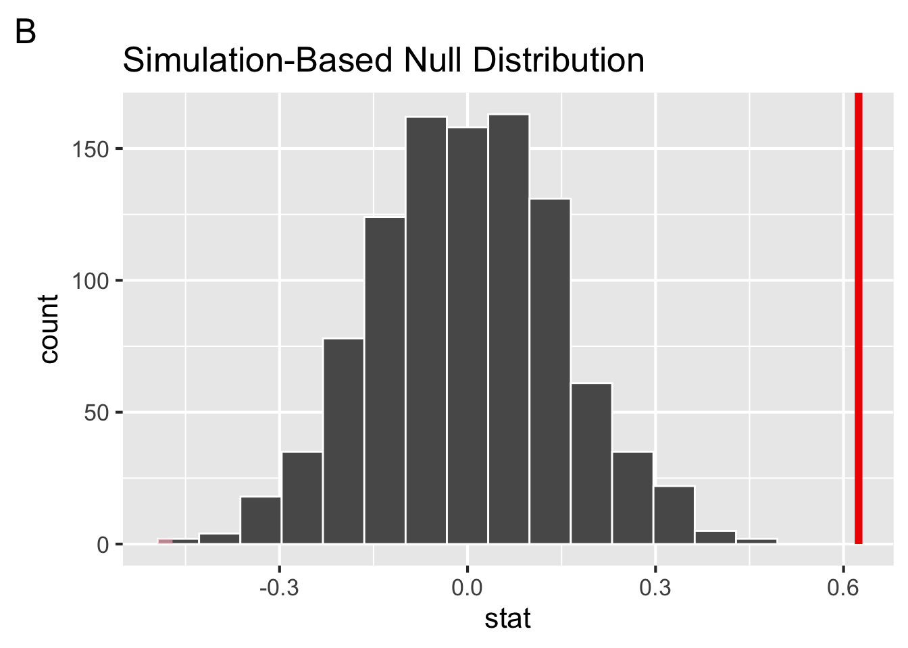
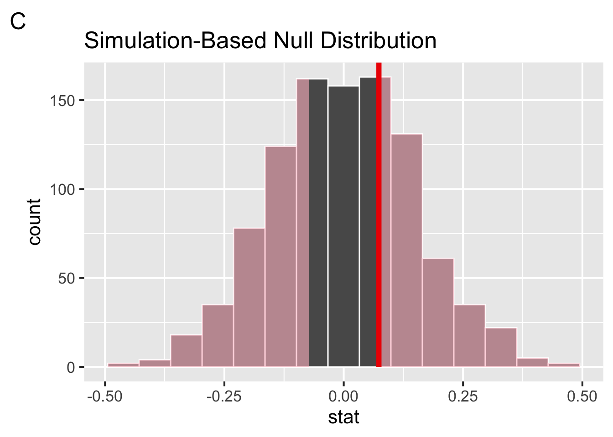

antique age show
1 1 2 a
2 2 3 b
3 3 4 c(Practice) Exam 1
Data Science for Studying Language & the Mind
Instructions
The exam is worth 97 points. You have 1 hours and 30 minutes to complete the exam.
- The exam is closed book/note/computer/phone except for the provided reference sheets
- If you need to use the restroom, leave your exam and phone with the TAs
- If you finish early, you may turn in your exam and leave early
Preliminary questions
Please complete these questions before the exam begins.
(1 point) What is your full name?
(1 point) What is your penn ID number?
(1 point) What is your lab section TA’s name?
(1 point) Who is sitting to your left?
(1 point) Who is sitting to your right?
1. (8 points) R basics: general
(2 points) Suppose you run the following code. Which command could you run to remove the
yvariable from the current environment? Choose one.x <- 1 + 2 y <- 3 + 4 z <- 0(2 points) Write an expression that would assign the value
10to the variable namemy_var?(2 points) Which of the following would install the
praisepackage? Choose one.(2 points) Suppose you run the following code. Which functions would return the structure of the object you defined? Choose one.
x <- c("bus", "stop")
2. (9 points) R basics: vectors, operations, subsetting
(2 points) Suppose you run the following code. What will length(x) return? Write your answer in the box below.
x <- 1:5(3 points) Suppose you run the following code. What will
y > 4return? Write your answer in the box below and show your work.x <- seq(2, 8, by = 2) y <- x[2:4](2 points) Suppose you run the following code. What will
typeof(x)return? Choose one.x <- c("apple", "banana", "pear", "orange")(2 points) Suppose you create the following data frame and assign it to the
dfvariable. What willsum(df$antique)return? Choose one.
3. (10 points) Data importing
(2 points) Which
tidyversepackage do we use to import data? Choose one.(2 points) True or false, the following code blocks return the same tibble.
tibble( x = 1:2, y = 3:4, z = 5:6 )tribble( ~x, ~y, ~z, ~1, 3, 5, ~2, 4, 6 )(3 points) Suppose you import “junesales.csv”, shown below, with the following code. What would
data$Salereturn? Choose one.Year, Month, Day, Sale 2023, June, 1, 0 2023, June, 2, 1 2023, June, 3, 0 2023, June, 4, 1data <- read_csv("junesales.csv", col_types = list(Sale = col_logical()) )(3 points) Suppose you import a dataset with but when you
print(data)you notice that theagecolumn was identified ascharacterwhen you were expectingdouble. Given the resulting tibble, which of the following arguments could you include in blank in the code below to solve this problem? Choose one.# A tibble: 4 × 3 age graduated gpa <chr> <lgl> <dbl> 1 18 FALSE NA 2 na FALSE 3.8 3 25 TRUE 2.9 4 21 TRUE 3.1data <- read_csv("data.csv", ________)
4. (11 points) Data visualization: basics
Suppose you are analyzing the durationsGe dataset, which includes the duration of the prefix ge- in Dutch by various speakers from the Spoken Dutch Corpus, glimpsed here.
Rows: 428
Columns: 8
$ Word <fct> geprikt, gepresteerd, gevolgd, geprikkeld, gestaak…
$ Frequency <int> 13, 25, 309, 16, 40, 42, 1301, 10, 73, 19, 39, 6, …
$ Speaker <fct> N01159, N01077, N01032, N01128, N01204, N01151, N0…
$ Sex <fct> male, male, female, female, female, female, male, …
$ YearOfBirth <int> 1944, 1980, 1939, 1979, 1963, 1956, 1979, 1944, 19…
$ DurationOfPrefix <dbl> 0.238703, 0.082057, 0.120832, 0.106897, 0.133441, …
$ SpeechRate <dbl> 3.144654, 6.882591, 6.870229, 7.217848, 5.866667, …
$ NumberSegmentsOnset <int> 2, 2, 1, 2, 2, 1, 2, 2, 1, 3, 1, 2, 1, 2, 3, 1, 2,…Then, you use the following code to generate the plots below.
# Code 1
ggplot(durationsGe, aes(x = DurationOfPrefix, fill = Sex)) +
geom_density(fill = "lightgray") +
theme_classic(base_size = 12) +
labs(y = "") +
scale_fill_manual(values = c("white", "gray", "black"))
# Code 2
ggplot(durationsGe, aes(x = DurationOfPrefix)) +
geom_density(fill = "lightgray") +
theme_classic(base_size = 12) +
labs(y = "")
(3 points) Which of plots A and B did Code 1 and 2 generate? Choose one.
(2 points) Which geoms could be depicted in plots A and B above? Choose all that apply.
(3 points) Consider the following code blocks 3 and 4. Would they generate identical figures? Explain why or why not in the box below.
# Code 3 ggplot( data=durationsGe, mapping = aes(y = DurationOfPrefix, x = Sex)) + geom_bar(stat = "identity") # Code 4 ggplot( aes(y = DurationOfPrefix, x = Sex), durationsGe) + geom_bar(stat = "identity")
(3 points) The code below makes use of a new geom,
geom_rug(), to generate plot C, in which each individual data point is plotted along the x-axis like a “rug”.ggplot(durationsGe, aes(x = DurationOfPrefix)) + geom_rug() + geom_histogram() + theme_classic(base_size = 12)
In the box below, rewrite the code such the color of the rug is mapped to the
Sexvariable and the bars of the histogram are filled in with the color “lightblue”.
5. (9 points) Data visualization: layers
Suppose you now want to visualize the SpeechRate variable in the durationsGe dataset, which codes a speakers speech rate in number of sylalbuse per second.



(2 points) True of false, adding the argument
position = "jitter"togeom_point()would add a small amount of random noise around each point in plot D?(2 points) Which of the following would change plot D to plot E? Choose one.
(2 points) Which of the following arguments to
geom_histogram()could be present in the code that returned plot F? Choose all that apply.(3 points) Which of the following layers must be present in the code that returned plot F? Choose all that apply.
6. (15 points) Data wrangling
Now that you’ve done some initial visualizations of the durationsGe data, you realize you need to do some data wrangling. Here’s a glimpse at the data again to refresh your memory.
Rows: 428
Columns: 8
$ Word <fct> geprikt, gepresteerd, gevolgd, geprikkeld, gestaak…
$ Frequency <int> 13, 25, 309, 16, 40, 42, 1301, 10, 73, 19, 39, 6, …
$ Speaker <fct> N01159, N01077, N01032, N01128, N01204, N01151, N0…
$ Sex <fct> male, male, female, female, female, female, male, …
$ YearOfBirth <int> 1944, 1980, 1939, 1979, 1963, 1956, 1979, 1944, 19…
$ DurationOfPrefix <dbl> 0.238703, 0.082057, 0.120832, 0.106897, 0.133441, …
$ SpeechRate <dbl> 3.144654, 6.882591, 6.870229, 7.217848, 5.866667, …
$ NumberSegmentsOnset <int> 2, 2, 1, 2, 2, 1, 2, 2, 1, 3, 1, 2, 1, 2, 3, 1, 2,…(3 points) The
Sexvariable in thedurationsGedataset has the following distinct values:"male" "female" NA. How many rows would be in the object returned by the following code block? Choose one.durationsGe %>% filter(Sex %in% c("female")) %>% summarise(minBirthYear=min(YearOfBirth, na.rm=TRUE), .by=c(Sex))
(6 points) Fill in the blanks in the partially completed code below such that it returns the following tibble, including the
meanandsdof theDurationOfPrefixvariable.durationsGe %>% group_by(__a__) %>% summarise(____b_____, _____c_______)# A tibble: 3 × 3 Sex mean sd <fct> <dbl> <dbl> 1 female 0.125 0.0480 2 male 0.126 0.0468 3 <NA> 0.0960 NA- (2 points) Fill in blank a.
- (2 points) Fill in blank b.
- (2 points) Fill in blank c.
(3 points) Consider the following code options. Would they return identical tibbles? Explain why or why not in the box below.
# option 1 durationsGe %>% select(Frequency) %>% filter(Frequency > 40) %>% distinct() # option 2 just_freq <- select(durationsGe, Frequency) freq_under_40 <- filter(just_freq, Frequency > 40) distinct(freq_under_40)(3 points) Consider the following code options. Would they return identical tibbles? Explain why or why not in the box below.
# option 1 durationsGe %>% select(Freq=Frequency, Speaker:DurationOfPrefix) %>% mutate(AgeInYears = 2023 - YearOfBirth, .before = Freq) # option 2 durationsGe %>% select(Frequency:DurationOfPrefix) %>% rename(Freq = Frequency) %>% mutate(AgeInYears = 2023 - YearOfBirth, .before = 1)
7. (10 points) Sampling distribution
The following data was simulated from Johnson & Newport (1989), a study investigating the English language proficiency of 46 native Korean or Chinese speakers who arrived in the US between the ages of 3 and 39. The researchers were interested in whether the participants’ age of arrival to the United States played a role in their English language proficiency.
Suppose we returned a tibble with the number of data points (n), the median, and the IQR (lower and upper) grouped by ageGroup.
# A tibble: 5 × 5
ageGroup n median lower upper
<chr> <int> <dbl> <dbl> <dbl>
1 0 23 268. 268. 270.
2 11-15 8 233. 228. 237.
3 17-39 23 220. 201. 233.
4 3-7 7 271. 269. 273.
5 8-10 8 263. 256. 266.Then, suppose we used infer to generate the sampling distribution for the median proficiancy of the 17-39 year old age group, visualize the distribution, and shade the confidence interval.

(2 points) Which of the following best describes the statistics in the tibble?
(2 points) The sampling distribution of the median looks approximately Gaussian. The probability densitiy function for the Gaussian distribution is given by which of the following equations?
(3 points) Fill in the blanks in the sentence below to describe what happens on each repeat in which we construct the sampling distribution via bootstrapping.
Draw __________ data points _____________ replacement, compute the ____________.
(3 points) The shaded area of the figure shows a 68% confidence interval. If we were to increase the
levelof confidence to 95%, the confidence interval would become:
8. (11 points) Hypothesis testing
Suppose we want to know whether the participants who arrived as adults (17-39 age group) acheived native performance. We decide to address this question via the 3-step hypothesis testing framework in which we investigate the difference in medians between the native English speakers (0 age group) and the adults (17-39 age group).
We begin by visualizing the data.

Then, we use infer to generate the sampling distribution for the difference in median proficiency between the native English speakers (0 age group) and the adults (17-39 age group).

(2 points) Which geom is best for our initial visualization of the data? Choose one.
(2 points) Step 1 of the 3-step hypothesis testing framework is to pose the null hypothesis. True or false, the null hypothesis here is that the observed difference in medians is due age group (age of arrival in the US).
(2 points) Step 2 is to ask, if the null hypothesis is true, how likely is our observed pattern of results? We quantify this likelihood with:
(2 points) Step 3 is to decide whether to reject the null hypothesis. In the original paper, Johnson and Newport (1989) concluded that the two groups were significantly different from each other, suggesting that participants who arrived to the US after age 17 did not acheive native proficiency. This implies that they (choose one):
(3 points) When we calculate the p-value from the simulated null distribution using the
get_p_value()function, we get p = 0. Is this a problem? Why or why not? Explain what a p-value of 0 means in this context.
9. (9 points) Correlation
Johnson and Newport (1989) also wanted to ask whether years of exposure to English predicted score on the English proficiency task. To address this, they computed the correlation between score and exposure.

(2 points) Given the scatterplot of these data, which of the following could be their observed correlation?
(2 points) True or false, the correlations computed on these data were subject to sampling variability.
(3 points) Johnson and Newport used hypothesis testing to determine whether the correlation they observed was significantly different from zero. We computed a p-value of
0.624on the correlation we observed in our simulated data. Which figure could represent this p-value visualized on a null distribution generated nonparametrically from 1000 repetitions?


(2 points) What type of relationship does the correlation between years of exposure and score suggest?